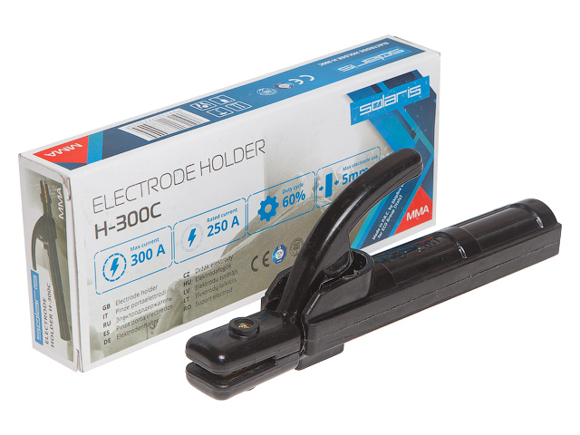

Электрододержатель Solaris H-300С
Описание товара
Электрододержатель Solaris H-300С в коробке (H-300C)
| Характеристики | ||||||
| Оптический класс | 1 | 2 | 1 | 3 | ||
| Зона обзора | 95.00 * 43.00 мм | |||||
| Размер фильтрующего элемента | 110.00 * 90.00 * 9.00 мм | |||||
| Количество сенсоров | 2 | |||||
| Затемнение в светлом состоянии | DIN 4 | |||||
| Затемнение в темном состоянии | DIN 9-13 | |||||
| Регулировка степени затемнения | внешняя | |||||
| Включение/выключение | полностью автоматическое | |||||
| Регулировка чувствительности | переключатель | |||||
| Защита от УФ/ИК | до 16 DIN | |||||
| Питание: | солнечная батарея, замена батареи не требуется | |||||
| Время срабатывания | 0.04ms | |||||
| Время задержки | 0.25-0.30s | 'fast' | 0.65-0.80s | 'slow' | ||
| Режим 'шлифовка' | есть | |||||
| Минимальный сварочный ток, ТИГ | 20A/DC, 20amps/AC | |||||
| Температура эксплуатации | -5°C — +55°C | |||||
| Вес | 470г | |||||